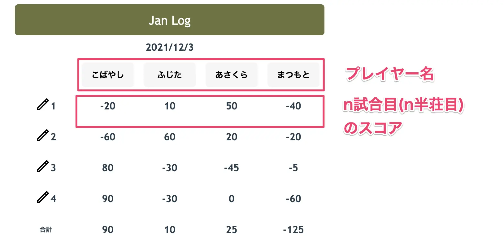

Elmで固定長配列が扱えるライブラリelm-static-arrayを触ってみた

目次
Elmで固定長配列を扱うためのライブラリelm-static-arrayを触ってみたので感じたことを書いていきます。
elm-static-array とは#
elm-static-array はElmで固定長配列を扱うためのライブラリです。
配列の長さを型で表現できることが特徴です。
-- StaticArray
-- 長さ 4 の配列
arrayLength4 : StaticArray Index.Four String
-- 通常の Array
ordinaryArray : Array String
どんな場面で使ったか#
趣味で開発している麻雀の点数集計アプリで使いました。
各プレイヤーの試合毎のスコアを記録して合計を表示するだけの簡単なアプリケーションです。(※実際には順位点やトビ賞の計算などもやっていますがここでは割愛)

ここで 参加者の名前 および その試合のスコア を Array String として扱おうとすると以下のようになります。
type alias Players = Array String
type alias Points = Array String
これではあらゆる長さの配列をとることができてしまいますが、仕様上どちらも長さ4もしくは5の配列しかとることはありません。 そこでelm-static-arrayを使って配列の長さの情報を型で表現しました。
type Players
= Players4 (StaticArray Index.Four Player)
| Players5 (StaticArray Index.Five Player)
type Points
= Points4 (StaticArray Index.Four Point)
| Points5 (StaticArray Index.Five Point)
ここからは実際に使ってみて感じたことを書いていきます。
elm-static-array を使うことで得られるメリット#
メリット①：仕様を型で表現しやすい#
上でも触れましたが、長さが4もしく5の Point の配列はelm-static-arrayを使うと以下のように定義できます。
type Points
= Points4 (StaticArray Index.Four Point)
| Points5 (StaticArray Index.Five Point)
elm-static-arrayを使うことで型に配列の長さの情報を持たせることができるため、仕様を型で表現しやすくなりコードの可読性向上に繋がります。
また、それにともなって 仕様上ありえない状態が存在できないコードを書きやすくなるためバグの可能性を減らす ことができます。
たとえば以下の isDefaultRound関数は引数に取った値がデフォルト値かどうかを判定する関数です。
type Round
= Round4 Round4Value
| Round5 Round5Value
type alias Round4Value =
-- 長さが 4 の StaticArray
{ points : StaticArray Index.Four Point
, seatingOrder : Maybe SeatingOrder
, tobisho : StaticArray Index.Four Point
}
type alias Round5Value =
-- 長さが 5 の StaticArray
{ points : StaticArray Index.Five Point
, seatingOrder : Maybe SeatingOrder
, tobisho : StaticArray Index.Five Point
}
isDefaultRound : Round -> Bool
isDefaultRound round =
case round of
Round4 _ ->
round == initRound4
Round5 _ ->
round == initRound5
仕様上 Points の長さは4もしくは5になるのですが、elm-static-arrayを使って書くと isDefaultRound関数のパターンマッチの中では仕様上ありえる値の分岐だけを扱えばいいことがわかると思います。
これをelm-static-arrayを使わずに書いた場合は以下のように仕様上ありえないパターンを扱う必要があります。
isDefaultRound : Round -> Bool
isDefaultRound round =
case Array.length round.points of
4 ->
round == initRound4
5 ->
round == initRound5
_ ->
False
elm-static-arrayを使うことで仕様上ありえないパターンを扱う必要がなくなりバグの可能性を減らすことができます。
メリット②：配列の要素を取得する際に Maybe をハンドリングする必要がない#
配列の要素を取得する際も通常のArrayとの違いを感じることができます。
以下は配列の要素を取得する get 関数の型定義です。
-- 通常の配列
get : Int -> Array a -> Maybe a
-- StaticArray
get : Index n -> StaticArray n a -> a
注目すべきは 返り値の型 です。
通常の配列では要素の型が a である配列の要素を取得する際の返り値の型が Maybe a になりますが、 elm-static-arrayでは返り値の型が a になります。
これにより Maybe をハンドリングする必要がなくなるためよりシンプルに記述できます。
懸念点#
逆に懸念だと感じたのは以下の2つです。
- Arrayに定義されているすべての関数が定義されているわけではない
- elm-static-arrayの書き方に慣れるまでは時間がかかる
それぞれ補足していきます。
懸念①：Array に定義されているすべての関数が定義されているわけではない#
Arrayに生えている関数がStaticArrayには生えてなかったりするので、都度Arrayに変換して処理をした上で再度StaticArrayに変換する、というような工程が必要になる場面がありました。StaticArrayには最小限の関数しか定義されていないので例えば filter や foldl(foldr) などは一度Arrayなどに変換し、処理してから再度StaticArrayに変換しなおす必要がありました。
以下はStaticArrayをArrayに変換してfilterしてStaticArrayに戻すコード例です。
StaticArray.fromList がheadとtailを引数に取るため若干コード量が増えてしまいます。
headの要素を取り出す際にNothingをハンドリングしなければならないのがちょっと億劫ですね。(もちろんコンパイラはStaticArrayから変換されたArrayであることなど知るよしもないので仕方ないのですが)
filterStaticArray : StaticArray Index.Four String -> StaticArray Index.Four String
filterStaticArray staticArray =
let
filteredArray =
staticArray
|> StaticArray.toArray
|> Array.filter ((/=) "")
head =
Maybe.withDefault "undefined" <|
Array.get
0
filteredArray
tail =
filteredArray
|> Array.slice 1 (Array.length filteredArray)
|> Array.toList
in
StaticArray.fromList
Length.four
head
tail
懸念②：StaticArray の書き方に慣れるまでは時間がかかる#
たとえばインデックスを指定してStaticArrayの要素を取得するget関数を使おうとドキュメント を見ると、下記のような記述があります。
-- Gets an element of the array. Note that it only possible if the index is in bound. Therefore eliminating Off-by-one errors.
get : Index n -> StaticArray n a -> a
自分のElm力の乏しさのせいではありますがドキュメントに具体的なコード例が示されていないこともあり、動かすまでにそれなりの試行錯誤が必要でした。(当時はGitHubで検索しても引っ掛からずに絶望していましたが、検索の仕方が悪かっただけだということに執筆時に気付きました。) 実際には以下のような使い方をする必要があります。ちゃんと動くコードを書くのに1hくらい費やしてしまいました。
head : Element
head = StaticArray.get (Index.fromModBy Length.four 0) someStaticArray
まとめると、 多少の手間が必要になる ということかなと思います。 このあたりがelm-static-arrayの作者が README の中で以下のように言っている所以かなと感じました。
Construction is a bit slower (should be neglectable for most cases).
ただ逆に言えばネガティブに感じたのは上記のそれくらいで、基本的にはメリットの方が大きく感じたためこれからも必要であれば使っていきたいと思っています。
まとめ#
Elmで固定長配列を扱うためのライブラリelm-static-arrayを触った感想を書いてみました。
仕様を型で表現しやすくなるという点に魅力を感じたので今後も必要なケースでは積極的に使っていきたいと思います。
また、ひさびさに個人開発をして、なかなか時間が取れずコードの意図や全体像をよく忘れたりするので個人開発においても可読性が高かったり意図の伝わりやすいコードを書くことの重要性が身に染みました。
時間がなかなかとれないからこそ質の高いコードを意識的に書いていきたいなと思います。